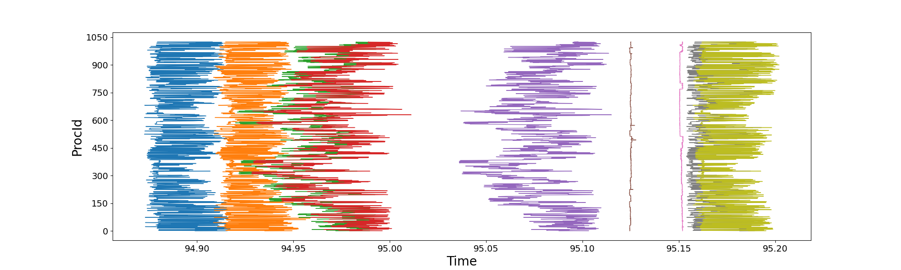
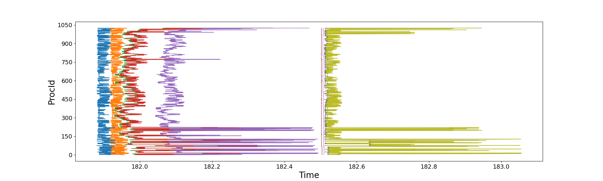
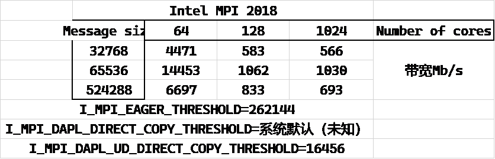
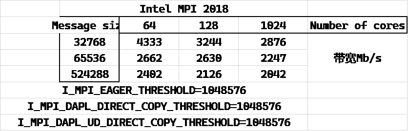
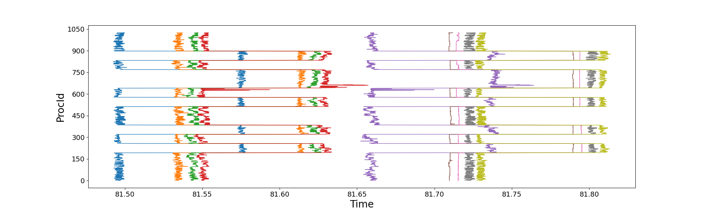

概览
前些天在超算上跑我的程序，结果遇到了一些MPI相关问题，这里记录我解决（某种程度上）这个问题的过程。
背景
去年12月-今年5月，我使用B地超算，跑我自己写的纯MPI并行程序，使用mpi/Intel/20.4.3，1024核以下没有出现过启动不了的情况。
当时1024核常常无法启动MPI_Init，管理员当时承认确实有问题但无法解决。
后续我一直在用mpi/intel/18.0.2。
8月我再次开始使用该超算，mpi/intel/18.0.2跑我的纯MPI并行程序。
但是出现了512核也时常MPI collective IO卡死的问题。
月初无法解决此问题，于是尝试该地超算其它分区以及J地的超算。
解决
J地超算上提交几次1000+核任务均无法启动MPI_Init，遂放弃。
B地超算上新分区节点任务繁忙，1000+核的任务等待时间较长，所以我没有太多测试。
但几次测试时常出现运行时MPI卡死。
经过阅读MPI相关资料，发现在Intel MPI 18版本下添加环境变量I_MPI_DAPL_UD=on启动UD模式通信可有效规避此问题。
回到B地原分区下，添加此环境变量后同样使得MPI卡死的问题几乎消失。
Intel官方文档解释：UD模式有效减少了MPI通信send/recv所需的缓冲区，显著降低了MPI占用的内存。
所以之前遇到的1000核任务运行时MPI卡死的现象应该是与内存相关。
鉴于三个分区的表现没有本质差别，我又回到了B地原分区尝试解决MPI问题。
该分区采用mpi/intel/18.0.2，设定以下环境变量
I_MPI_FABRICS=shm:dapl
I_MPI_DAPL_UD=on
I_MPI_FALLBACK=off
启动1024核任务，MPI init启动问题几乎消失了，MPI IO卡死问题几乎消失了。
但我的程序性能出现了巨大差异。
有时候1024核任务开始的500步迭代速度还可以，但随后变慢为1/3速度。有时候则一开始迭代速度就是预期的1/3慢。
我首先尝试理解内存的事情。
我首先给我的纯MPI程序添加了OpenMP directives，使其可以MPI/OpenMP混合并行。
然后测试了相同问题规模和相同输入参数下的内存占用，1024核任务。
纯MPI并行，调用了16个节点，每个节点64个MPI processes。
程序内部通过查看/proc/self/statm获知1024核总内存占用量为1.81E6 MB；
MPI/OpenMP混合并行，调用16个节点，每个节点32个MPI processes，每个MPI process开2个threads，程序内部查看/proc/self/statm获知1024核总内存占用量为1.05E6 MB。
可以看到MPI并行本身的确占用了海量内存，几乎总内存占用量的一半都是MPI本身占用的。（这个事实，专业人员应该是了解的；我是逐渐认识到的，尝试解决问题。）
另外我检查了我的程序是否存在内存泄漏。
MPI模式的valgrind显示在调用的MPI calls中存在memory lost，鉴于Intel MPI的广泛使用，我认为这是false positive。valgrind没有找到我程序中的内存泄漏。
接下来，我尝试使用Intel自带的Intel Tracer And Collector来查看MPI性能。 但是按照Intel官方给的步骤加载ITAC，无法启动MPI。 所以为了理解我程序的MPI函数调用情况，我给我的程序手动添加了记录MPI调用时间的代码，每个进程记录自己的时间，不做额外的MPI call。 于是我分别提交了两次1024核纯MPI并行任务，得到了以下两图。 上图是前500步内程序运行较快时，单次迭代内1024核各自调用关键函数时的时间；下图则是程序慢3倍时，单次迭代内1024核各自调用关键函数时的时间。


上图中程序运行前500步内较快，但存在1024核负载不均衡、MPI通信部分节点延迟，但并不严重。
橘色线到绿色线是程序核心的MPI调用，也就是MPI_Isend/Irecv。
右端的粉红线到灰色线同样调用了MPI_Isend/Irecv。
下图中显然1024核中某些节点的MPI通信延迟非常高，而且均发生在调用MPI_Isend/Irecv的过程，也就是橘色线到绿色线、粉红线到灰色线。
所以1024核程序运行慢3倍的原因是某些节点MPI通信有问题，响应慢。
于是我测试了Intel自带的IMB-MPI1 Exchange。这个MPI Benchmark模式Exchange测试的是MPI_Isend/recv。
多次测试显示MPI_Isend/recv从128核，也就是2个节点，就出现性能极其严重的下降。
我理解64核1个节点采用shared memory模式，带宽就是会很高，但IB网络下节点间通信带宽不应该过分差。下见表格。


我测试了三种：mpi/intel/18.0.2（默认参数），mpi/intel/20.4.3（默认参数），mpi/intel/18.0.2（调整参数）。
从上面3个表格中可以看到Intel MPI 20.4.3版本（多次尝试后成功启动的一次）性能合乎IB网络预期，可以达到4Gb/s。
Intel MPI 18.0.2默认参数下2节点的带宽就掉到了不到600Mb/s。
而通过增大I_MPI_EAGER_THRESHOLD, I_MPI_DAPL_UD_DIRECT_COPY_THRESHOLD，多节点带宽可以2Gb/s~3Gb/s，但没达到Intel MPI 20.4.3默认参数下的4Gb/s。
I_MPI_EAGER_THRESHOLD是MPI在message size较小时采用eager模式，message size较大时采用rendezvous模式。
两个模式的区别在于rendezvous模式中Sender要等Receiver返回消息说它准备好接收数据时才会发送。
Receiver准备好接收数据也就意味着Receiver给接收的buffer分配好了内存。
I_MPI_DAPL_UD_DIRECT_COPY_THRESHOLD也是类似的操作。Intel官方解释是
Set this environment variable to control the DAPL UD direct-copy protocol threshold. Data transfer algorithms for the DAPL-capable network fabrics are selected based on the following scheme:
- Messages shorter than or equal to <nbytes> are sent using the eager protocol through the internal pre-registered buffers. This approach is faster for short messages.
- Messages larger than <nbytes> are sent using the direct-copy protocol. It does not use any buffering but involves registration of memory on sender and receiver sides. This approach is faster for large messages.
我没有继续测试到底是以上三个参数中哪一个起到了关键作用，但我倾向于I_MPI_DAPL_UD_DIRECT_COPY_THRESHOLD。
不管是哪个参数，均涉及了pre-registered buffers。
并且，提高阈值使这个pre-registered buffers减少可以提高通信带宽。
所以我针对多节点MPI通讯性能差的问题，提出一个想法是：B地超算该分区的节点在内存、page cache设定上可能存在问题，MPI send/recv数据过程中使用buffer要向kernel申请内存，而kernel为了给出内存，需要反复回收page cache等，同时NUMA架构下，分配的内存与CPU没有就近相连，导致的性能巨大损失。 但这只是个不成熟的猜想，我并非科班出身。对这个猜想的验证，也留待以后工作中注意。
我在我们课题组几百核的小集群验证了：Linux系统在内存回收、page cache上的设定不合理导致的某计算流体力学商业软件的2倍性能损失。 见解决小集群中某节点比其它节点慢的问题和解决小集群中某节点比其它节点慢的问题（续）。
采用Intel MPI 2018的调优参数运行我的纯MPI程序，1024核运行，各进程时间戳如下

可以看到单个迭代步共0.3s，某些节点仍然出现将近0.1s的通信延迟，同时MPI load imbalance比之前Intel MPI 2018默认参数下减轻了很多。
这个将近0.1s的通信延迟呈现了某种规律，也许可以进一步调优。
但这个问题留待以后解决，现在的任务是尽快解决当前的课题。